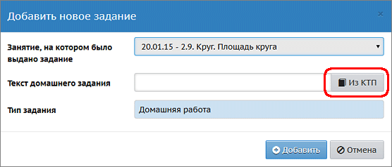
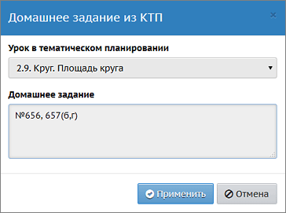
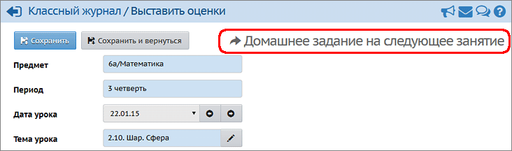

Если при создании календарно-тематического планирования (КТП) заполнять графу Домашнее задание, то это позволит в дальнейшем многократно использовать его при заполнении классного журнала.
Использование домашнего задания из КТП
Можно не только ввести домашнее задание (ДЗ) вручную, но и использовать уже сохранённое ДЗ из КТП. Для этого при создании ДЗ нажмите кнопку Из КТП:

В новом окне вам будет предложено готовое ДЗ из КТП, соответствующее теме, которая изучалась в день выдачи домашнего задания:

Внимание: если в уроке КТП не заполнена графа Домашнее задание, то по кнопке Из КТП в качестве ДЗ будет предложена тема выбранного урока. Пример 1 (иллюстрирован на скриншотах выше). Учитель проводит урок 22.01.2015. На экране Выставить оценки учитель хочет выставить оценки за домашнюю работу, заданную к сегодняшнему дню: к 22.01.2015. В графе Домашнее задание учитель нажимает кнопку Добавить на текущий урок. Открывается окно "Добавить новое задание" с датой выдачи ДЗ - 20.01.2015 (это предыдущее занятие по предмету). Сохранённое ДЗ также предлагается из КТП, соответствующее предыдущему занятию за 20.01.2015.
Назначение домашнего задания на следующие уроки
В графе Домашняя работа нужно выставлять оценки за ДЗ, которое было задано к сегодняшнему уроку (т.е. было задано на дату, которая выбрана в поле "Дата урока"). Эти выставленные оценки за домашнюю работу отображаются в дневнике учащегося также за сегодняшний день.
Чтобы назначить ДЗ на следующее занятие, и даже на любое из пяти следующих занятий, нажмите кнопку Домашнее задание на следующее занятие. И тогда ученик сможет увидеть ДЗ в тот день, который вы укажете.

Пример 2 (иллюстрирован на скриншоте выше). Учитель проводит урок 22.01.2015. На экране Выставить оценки учитель хочет выдать ДЗ следующему уроку. Учитель нажимает кнопку Домашнее задание на следующее занятие. В новом окне система показывает дату следующего занятия - 23.01.2015, при этом предлагает готовый текст ДЗ из КТП, который связан с темой сегодняшнего урока за 22.01.2015.
Когда и кем назначалось домашнее задание?
В системе фиксируется факт назначения ДЗ учителем, а также факт редактирования уже назначенного ДЗ. Эту информацию можно увидеть в Отчёте о доступе к классному журналу.
Замечание. Ученики и родители могут видеть в этом отчёте только последний факт назначения ДЗ по каждому предмету. Сотрудники школы могут видеть всю историю назначения ДЗ за любой период времени.